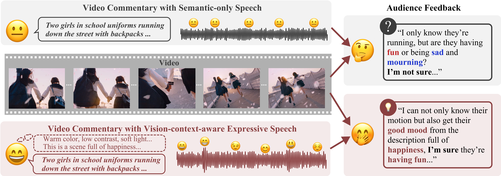
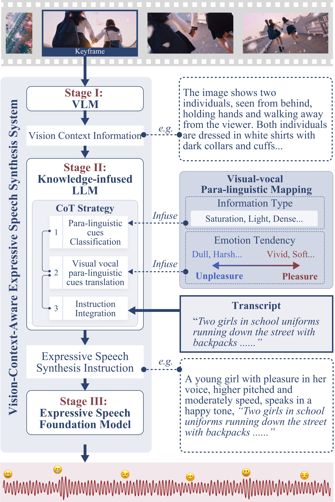

Please open the demo webpage in Chrome for an enhanced experience.
Abstract
Automatic video commentary systems are widely used on multimedia social media platforms to extract factual information about video content. However, current systems may overlook essential para-linguistic cues, including emotion and attitude, which are critical for fully conveying the meaning of visual content. The absence of these cues can limit user understanding or, in some cases, distort the video’s original intent. Expressive speech effectively conveys these cues and enhances the user’s comprehension of videos. Building on these insights, this paper explores the usage of vision context-aware expressive speech in enhancing users’ understanding of videos in video commentary systems1 . Firstly, our psychological experiments indicate that semantic-only speech can lead to ambiguity, and misaligned emotions between speech and visuals may distort content interpretation. To address this, we propose a method called vision-context-aware speech synthesis (V-CASS). It analyzes para-linguistic cues from visuals using a vision-language model and leverages a knowledge-infused language model to guide the expressive speech model in generating context-aligned speech. User studies show that V-CASS enhances emotional and attitudinal resonance, as well as user audio-visual understanding and engagement, with 74.68% of participants preferring the system. Finally, we explore the potential of our method in helping blind and low vision users navigate web videos, improving universal accessibility without visual input. Potential effects on audience of semantic-only speech versus vision-context-aware expressive speech in video commentary tasks. Semantic-only speech lacks emotional and attitudinal information, leading to ambiguity and reduced engagement. In contrast, adding expressive speech aligned with visual para-linguistic cues helps enhance emotional resonance and improve the overall understanding of video content.
Given Video |
Given Transcript |
Video with Vision-context-aware Expressive Synthesized Speech |
||
|
W1V01A |
+ |
她站在船尾，凝望着面前长长的浪花轨迹，天空阴沉灰暗，没有一丝生气。(trans: She stood at the stern, staring at the waves in front of her. The boat left a long trail of waves on the water, and the sky was gloomy and lifeless)
|
→ |
W1V01B |
|
W1V02A |
+ |
In the dimly lit room, a person quietly opened a book, swiped his fingers back and forth, and flipped through the pages.
|
→ |
W1V02B |
|
W1V03A |
+ |
一丛美丽的金黄色花朵在微风中欢快地摇曳，在远处蓝天的映衬下，显得格外耀眼。(trans: A beautiful cluster of golden flowers swayed happily in the breeze, appearing particularly dazzling against the backdrop of the distant blue sky)
|
→ |
W1V03B |
|
W1V04A |
+ |
In the sunny forest, golden leaves fall from the sky and spread all over the ground.
|
→ |
W1V04B |
|
W1V05A |
+ |
There are some potted plants on the windowsill, and the blue sky and white clouds outside the window make the room even darker.
|
→ |
W1V05B |
|
W1V06A |
+ |
黑暗的房屋中，白色烟雾翻腾着升起，缓缓消散在空中。
(trans: In the dark house, white smoke rose and slowly dissipated into the air)
|
→ |
W1V06B |
|
W1V07A |
+ |
A butterfly lay in the center of the flower, gently its wings, and soon flew away quietly.
|
→ |
W1V07B |
|
W1V08A |
+ |
一对男女漫步在沙滩上，夕阳的映衬下，海面上泛起金色的光芒。
(trans: A man and a woman stroll on the beach, and under the setting sun, the sea surface shines with golden light.)
|
→ |
W1V08B |
|
W1V09A |
+ |
阳光灿烂，微风和煦，穿着白裙子的女人在花丛中走过，双手轻轻抚摸着身旁的花朵。
(trans: The sun is shining, the breeze is gentle, and a woman in a white dress walks through the flowers, gently stroking the flowers beside her.)
|
→ |
W1V09B |
|
W1V10A |
+ |
他独自撑着伞，孤寂地行走在空旷的土地上，画面一片灰暗，毫无活力。
(trans:
He walked alone on the empty land with an umbrella. The picture was dark and lifeless.)
|
→ |
W1V10B |
Video from Social Networks |
Video Resource |
Improved via Vision-context-aware Expressive Speech Synthesis |
||
|
W1VV01A |
Platform: xiaohongshu |
W1VV01B |
||
|
W1VV02A |
Platform: TikTok Link: https://www.tiktok.com/@happy.little.cat0/video/7404854561912982827 |
W1VV02B |
||
|
W1VV03A |
Platform: xiaohongshu |
W1VV03B |
||
|
W1VV04A |
Platform: tubitv |
W1VV04B |
Objective: This experiment evaluated the impact of different emotional expressions in speech on users' understanding of video content, focusing on how visual and auditory emotional consistency affects interpretation.
Experimental Setup: We selected 20 videos with clear visual cues (e.g., color, composition, lighting) and paired each with three types of voiceovers:
Procedure: 30 participants viewed random video-voiceover pairings and rated the overall emotional tone.
Results: The findings revealed that participants more accurately interpreted video emotions when the voiceover's emotional tone matched the video's visual cues. In contrast, contradictory emotional tones led to significant interpretation errors.
Effects of emotional consistency on video understanding. For each pair of video and speech, the resulting visual-vocal emotion tendencies (PPT, PNT, NPT, NNT) are evaluated by participants, where first P/N represents the original intent and second P/N represents the evaluation result. We compute the consistent rate of visual-vocal emotion tendency in line with the original visual intent as (PPT+NNT)/(PI+NI), while the inconsistent rate as (PNT+NPT)/(PI+NI).
|  |
Overview of V-CASS method for synthesizing vision context-aware expressive speech. To generate context-aware speech, it can be essential to incorporate a combination of models and strategies that ensure the speech aligns with the para-linguistic cues presented in the video. Our method integrates a VLM, an LLM infused with expert knowledge through the CoT strategy, and an expressive speech foundation model. The method is summarized and illustrated in Figure as follows:
|
Here shows videos used in the psychological expriments.
Negative video with negative speech-W2Vcn13
Positive video with positive speech-W2Vcp11
Positive video with negative speech-W2Vicn09
Negative video with positive speech-W2Vicp24
Video with neutral speech-W2V0n25
|
This is the questionnaire used in our psychological experiments. The test consists of 20 questions, each of which includes a video material with a description voice. Participants are required to watch the video, and then judge the emotional tendency of the video to complete the multiple-choice questions. Note that, the video emotions include two emotional tendencies.
|
The interviews followed a semi-structured format. Core questions addressed the relationship between visual cues and emotional expression, but the format allowed flexibility for deeper exploration. This method helped uncover implicit knowledge regarding how voice actors adapt emotional tones based on visual content.
Interviewer: When doing voiceovers for videos, do you consciously pay attention to the emotional expression in your voice?
Expert: Of course. Unless it’s a more serious or objective scenario where we’re required to use a neutral, emotionless voice, most of the time, we’re expected to convey appropriate emotions, especially in contexts like films and animations.
Interviewer: How do you determine the appropriate emotional tone to use?
Expert: Well, the client’s requirements always come first.
Interviewer: If there are no explicit instructions from the client, and you have to decide on the emotional tone yourself, how do you figure out what’s appropriate?
Expert: Basiclly it will be decided on the content and theme of the video. You know, like the background story. But definitely I would not use the same tone all the time, so for different scenes, I adjust based on visual styles.
Interviewer: How do you make these adjustments? Which visual elements influence your emotional expression? For example, lighting or color?
Expert: Yeah, the visuals themselves provide some hints. It's kind of like...a bright and sunny scene might prompt Interviewer to use a happier tone, while a dark and rainy scene might call for a sadder one.
Expert: But, it’s not absolute. You still have to consider the theme and background. Take today, for example—although the weather is nice, if it were a breakup scene, I would still use a sad tone for the voiceover. Conversely, if it’s a joyful reunion happening on a rainy day, despite the gloomy visuals, I could use a more cheerful tone, don’t you think that would also make sense?
Interviewer: That sounds like the artistic technique of using a joyful setting to highlight sadness. But there are still some general rules, right? Certain visual elements or artistic conventions that often guide emotional expression?
Expert: Yes, exactly. It’s true that in most cases, the relationship between visuals and emotional expression doesn’t completely go against intuition. Only a few directors prefer to deliberately do the opposite.
Interviewer: Ok, let's suppose you’re a voiceover director, and you’re not considering the background story, theme, or the any personal artistic requirements, just focusing on the visuals. How would you guide a voice actor in matching the appropriate emotional tone to the visuals? I mean, using the most basic and common emotional correspondence between vision and hearing.
Expert: I typically start with lighting and color. These are the most immediate visual factors that can influence emotions. Brighter lighting and colors usually convey more positive emotions, while darker ones tend to evoke negative feelings.
Interviewer: Could you be more specific? For example, what kind of colors would you consider "bright," and which ones would feel heavier?
Expert: If I had to set a standard, I'd say the key factors are brightness, saturation, and contrast. High brightness colors, like light yellow or pink, usually convey a light and cheerful feeling. On the other hand, low brightness colors, such as dark brown or gray, tend to evoke heavier or more oppressive emotions.
Interviewer: So, saturation and contrast also affect emotional expression?
Expert: Yes, exactly. High saturation colors, like bright red, tend to intensify emotions—passion or anger, for example. Low saturation colors, like light blue or gray, convey softer, more restrained feelings, such as calmness or melancholy. As for contrast, strong contrasts, like black and white, often bring about a sense of tension and make the image more exciting. Meanwhile, softer transitions between colors tend to make emotions feel more relaxed and peaceful.
Interviewer: What about lighting effects? Are there similar standards for judging how lighting affects emotions?
Expert: Yes, lighting plays a significant role. Soft lighting, like diffused light, creates a warm and comfortable atmosphere, often seen in peaceful or intimate scenes. In contrast, sharp lighting, such as a spotlight, can enhance tension or dramatize a scene. As for shadows, large areas of deep shadow, like in a basement or night scene, tend to convey feelings of oppression or fear, while softer shadows, like dappled light through trees, might evoke feelings of tranquility or mystery.
Interviewer: These changes in color and lighting seem to be fairly obvious visual cues. But when you're doing voiceovers, do you also consider more subtle or less noticeable visual elements, like the shapes of lines or the composition of the scene?
Expert: Absolutely. Lines and composition are also crucial in determining the emotional tone. Smooth curves often convey elegance and softness, like in romantic or gentle scenes, while sharp, straight lines can suggest tension or conflict. For example, straight lines are more common in scenes involving action or architecture, where they can make the viewer feel uneasy or suggest danger.
Expert: When it comes to composition, a balanced layout typically conveys stability and harmony, making the audience feel comfortable and at ease. However, when the composition is unbalanced—for instance, if one side has too many or too dense elements—it can create a sense of unease or even anxiety. In suspense or horror films, directors often use unbalanced compositions to heighten the tension and uncertainty for the audience.
Interviewer: So, these combinations of visual elements—like color, lighting, lines, and composition—directly influence the emotional tone in voiceovers?
Expert: Yes, exactly. While some visual elements, like color and lighting, are more immediately noticeable, the finer details, such as lines and composition, also play a critical role in shaping emotional expression. Especially in more complex emotional scenes, these visual cues help voice actors accurately capture and convey emotions that align with the visuals, allowing the audience to more deeply connect with the emotional atmosphere of the story.
In order to extract detailed, objective information from each keyframe without introducing any emotional bias, we designed a specialized prompt for the Vision-Language Model (VLM). This prompt is tailored to capture the visual content and style of the image in a highly neutral and descriptive manner.
The VLM is instructed to focus solely on the factual details of the image, ensuring that the description remains purely informational. By avoiding any emotional language or interpretive keywords, the prompt ensures that the output provides an accurate visual summary that can later be processed for emotional inference in subsequent stages.
The key elements of the prompt are:
Comprehensive Detail: The VLM is asked to describe the keyframe in as much detail as possible, focusing on both content (objects, people, background elements) and stylistic attributes (colors, lighting, shapes).
Objectivity: The prompt explicitly avoids any emotional or subjective language, ensuring that the output remains neutral and strictly descriptive.
Neutral Style: The VLM's output must avoid keywords or phrases that could imply an emotional interpretation, such as "calm" or "tense." This allows for an unbiased description of the visual content, which can then be further analyzed for emotional alignment in the speech synthesis stage.
Task Description
The primary task involves analyzing keyframe visual contexts to extract emotional and content information. This information is then translated into expressive speech synthesis instructions that align semantically and emotionally with the visual content. The goal is to enhance user understanding and engagement through the integration of para-linguistic cues in speech.
Expert Knowledge Utilization
Expert knowledge in visual analysis is applied to guide emotional inference. This includes the analysis of lines, shapes, light and shadow, color psychology, and object symbolism. For instance, soft curves and warm lighting might evoke calm, while sharp lines and dark shadows can suggest tension or unease. This expert-driven process is vital for accurately interpreting the visual content's emotional tone.
Workflow Explanation
1: Visual Content Analysis: Analyze visual elements, such as shapes, colors, and lines, using a Vision-Language Model (VLM) to extract relevant features that inform the emotional and contextual interpretation.
2: Emotional Inference: Using the expert knowledge and the extracted visual cues, infer the emotional content of the video. This step includes mapping specific visual cues (e.g., lighting, composition) to likely emotional responses.
3: Instruction Generation: Translate the emotional and content information into specific speech synthesis instructions, including tone, mood, volume, and speech rate. These instructions guide the synthesis of context-aware expressive speech.
Workflow Examples
Example 1: A video with soft curves and warm colors might generate a calm, warm-toned female voice to describe a serene landscape scene.
Example 2: Sharp lines and high-contrast colors might result in a tense, assertive male voice, aligned with the visual content's emotional intensity.
Here shows videos used in the user studies.
W4V02B
W4V03B
W4V06B
W4V02A
W4V03A
W4V06A
|
This is the questionnaire used in the first user study experiment. This test has a total of 10 questions, each question contains a video without audio. Participants are required to watch the video and summarize the emotional information of the video based on the visual elements of the picture to complete a fill-in-the-blank question. |
|
This is the questionnaire used in the second user study experiment. This test has a total of 10 questions, each question contains two video materials with different audios. Participants are required to watch the video, and complete the multiple-choice questions. |
This observation aims to explore how emotion-based speech, driven by visual content, can improve the video-watching experience for BLV (Blind and Visually Impaired) users. While many BLV users have grown accustomed to the neutral tone of AI voices, this study introduces emotional narration to create a more immersive and engaging experience, helping them better perceive emotions and imagine visual scenes.
The analysis relies on subjective feedback from BLV users. Through interviews, we collected personal opinions on how different types of narration influenced their emotional engagement and overall experience. Despite being familiar with standard AI narration, participants were surprised by the emotional depth that emotion-driven speech brought to their experience.
The interviews revealed some key insights:
The following examples illustrate how emotion-based speech influenced user experience, drawn from our interviews with participants: